LAMAD ERP
An ERP for a company that ran five departments on paper, Excel and email. I designed it on my own, end to end, over six months.
- Client
- LAMAD LLC
- Role
- Solo product designer
- Where
- Muscat and Dubai
- Timeline
- 6 months
- Status
- In final development
Where this started
LAMAD is an ISO-certified metering company in Oman's oil and gas sector, with clients like PDO. When they opened in Dubai, they suddenly had two legal entities, two VAT setups, five departments, and nothing connecting them. Sales visits lived in notebooks, procurement requests went by email, and every purchase order was a PDF written from scratch.
Nobody at LAMAD had used SAP, Zoho, Odoo or anything like them. But each team knew its own work perfectly. What nobody had seen was all of it joined up: five departments working from one set of facts, with access drawn so not everyone sees everything. A junior accountant shouldn't see a client's budget. Procurement shouldn't see live sales figures. Making that work without making it heavy for first-time users was the real job.
Finding out what it needed to do
Their processes were mostly undocumented, or scattered across email and Teams. So I put 50+ pages of their internal documents into NotebookLM, then filled the gaps by interviewing the heads of Procurement, Logistics and Project Management.
Most of those pages were policy written for LAMAD's staff. What I needed was buried inside: how procurement runs, how logistics gets scheduled, how vendor quotes are handled. So I told NotebookLM what I was looking for and had it pull those parts out.
Then, with each head of department, I asked: do you do this because the business needs it, or because that's how it's always been done? Those turned out to be very different lists.
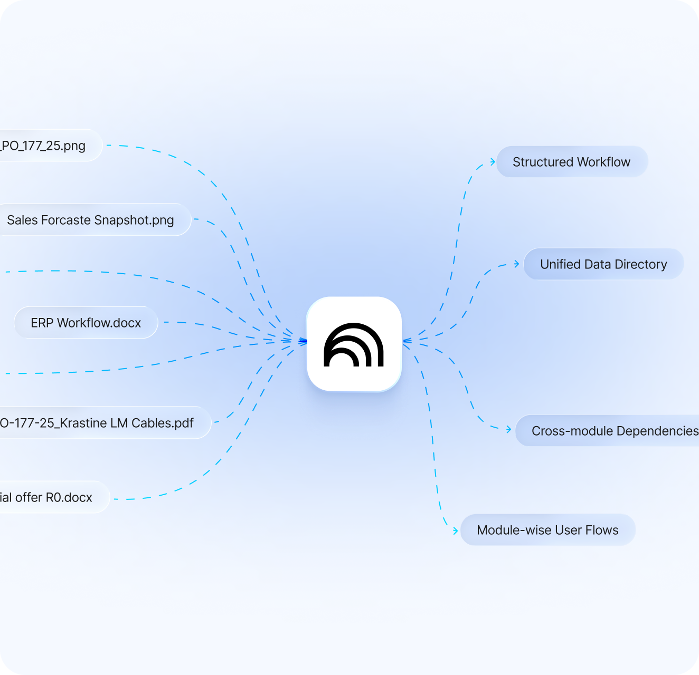
Before and after
Key decisions
One record per client visit
When a client signed, sales used to rewrite everything to brief the project team. Now every visit, follow-up, document and next step lives in one record, newest first. When a prospect converts, the visit report becomes an Inquiry, and then a Project. Nobody types anything twice, and the manager sees it all without chasing anyone.
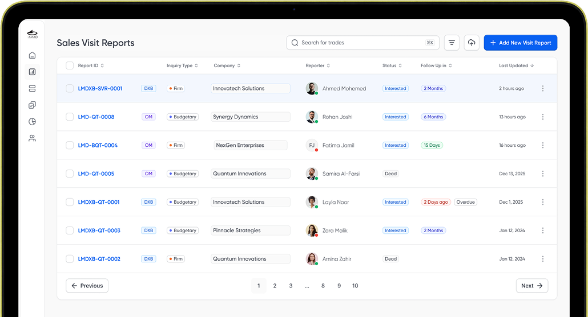
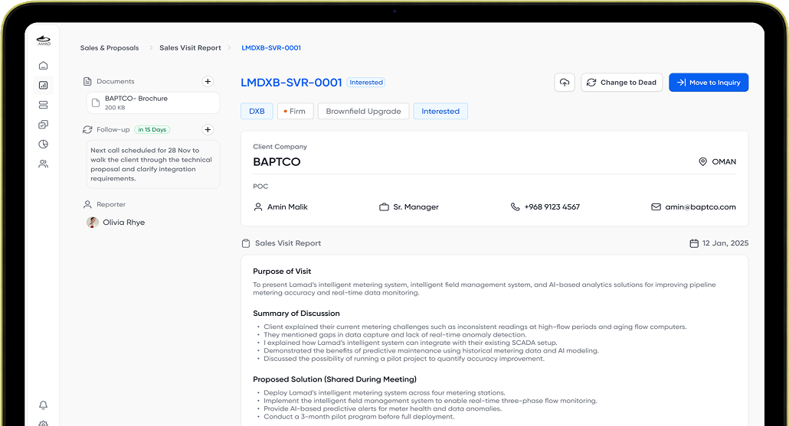
A purchase order in three steps
These people were coming straight from paper. Give them one long form and you lose them on day one. So a PO takes three steps, each about one kind of decision, in the order you think in. That matters most at items, because a PO can have one line or twenty.
The part I pushed hardest for is the preview before you submit. On paper, they always looked at the finished document before sending it, so I kept that moment. It looks exactly like the printed PO, and you can jump back to any step to fix something.
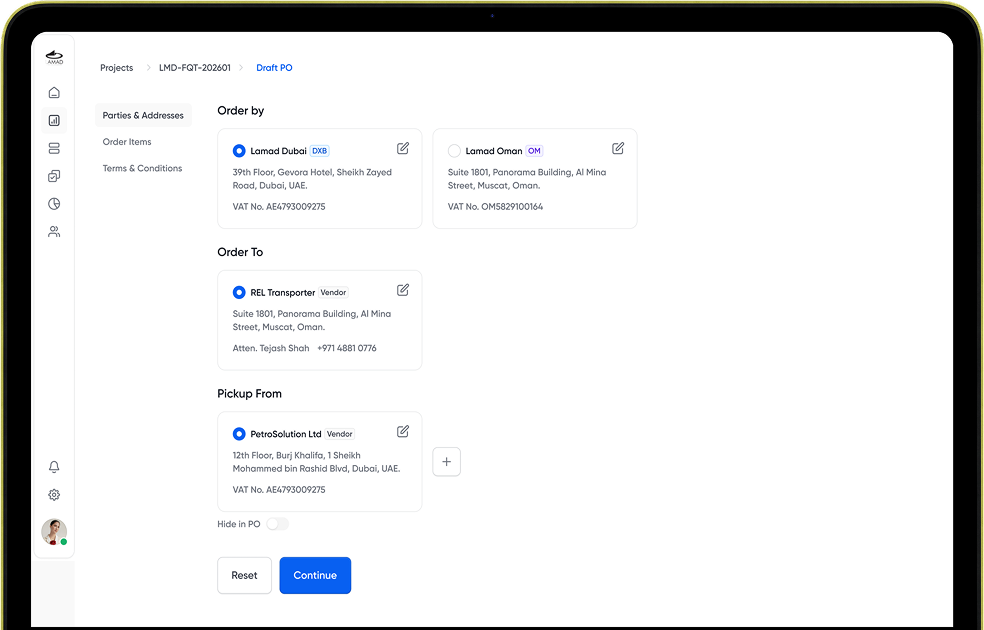
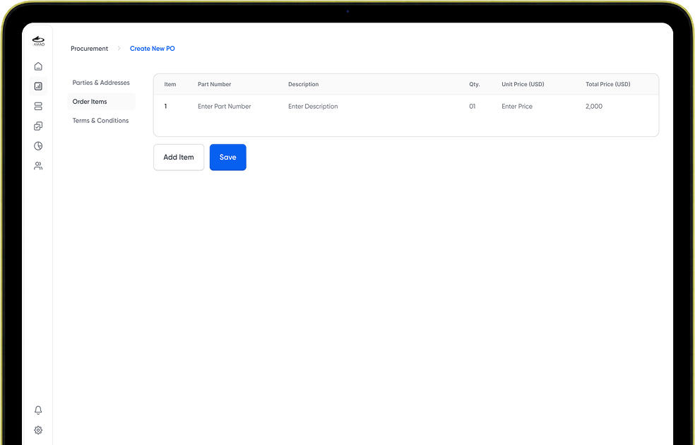
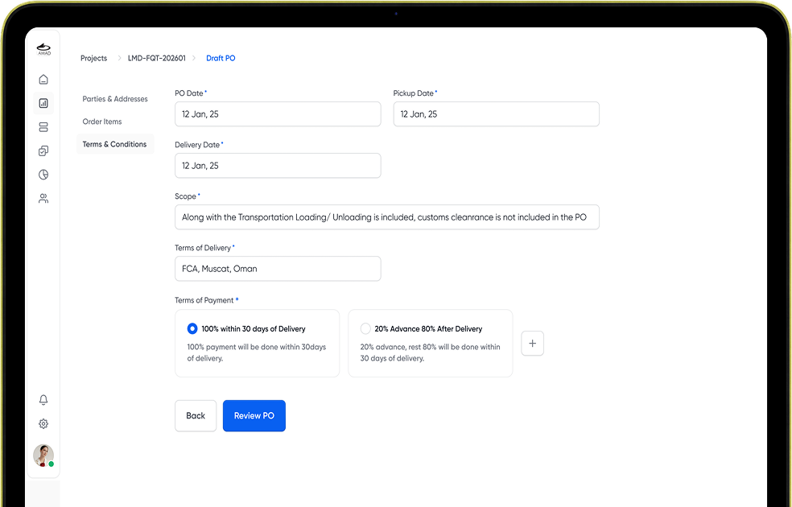
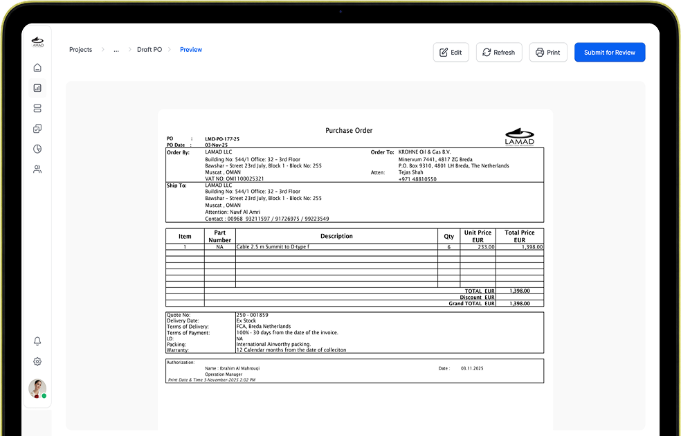
Approval, not a warning
The client wanted vendor selection to be fair and auditable. How to enforce it was up to me.
A warning when someone skips L1, the lowest qualified bidder, was the lightest option. I dropped it quickly: a warning you can click past doesn't stop anyone who has already decided. So if you pick anyone but L1, you write a reason, and management approves it before the PO moves.
That one line makes approval faster, not slower. The reason is right there, so nobody chases messages to find out why, and every decision leaves a record.
Choose vendor
Flow computer / flow data logger · Qty 1
Why did you choose this vendor and not L1?
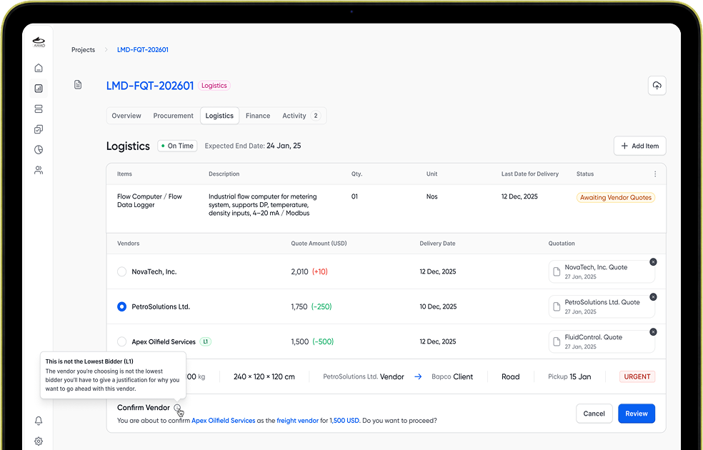
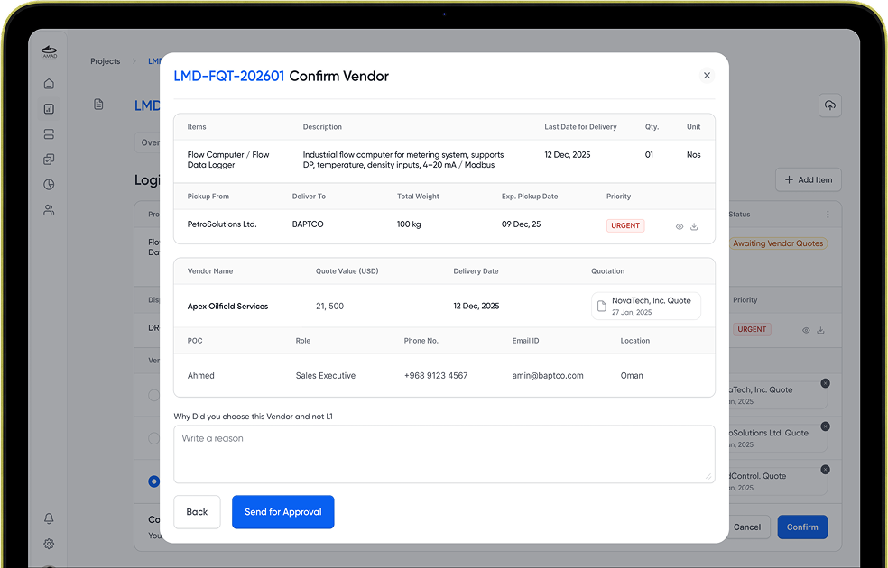
A pipeline the team can change themselves
LAMAD is growing. Today it's Oman and Dubai; tomorrow it could be India or Saudi Arabia, and the sales cycle will change with each market. Fixed stages would mean waiting on a developer every time.
So the first and last stages stay put, and everything between them is the team's to add, remove or rename. The dashboard above it adds branch toggles, time filters, revenue trends and a breakdown by category, so management can see the pipeline across both offices.
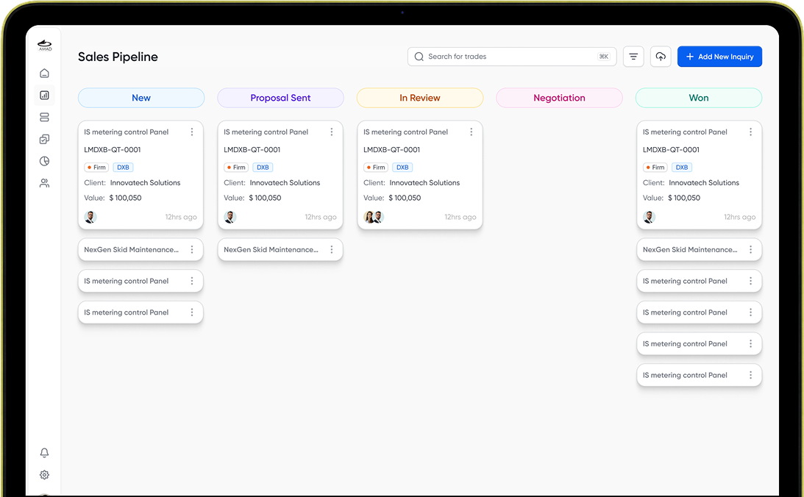
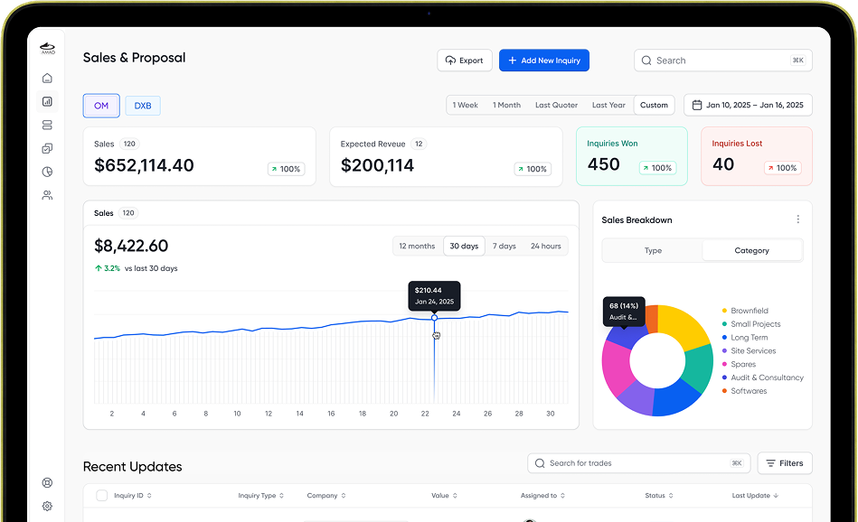
Access follows the role, not the person
The obvious answer is a permissions table per person. I tied access to the org structure instead. You make a role, say Account Manager 1, and the role gets the rights. Account Manager 1 and Account Manager 2 can have completely different rights, and someone who needs the same access just joins the role.
Add an employee, place them in the structure, and their access comes with the seat. It works at any team size, and the client thinks in roles they already know.
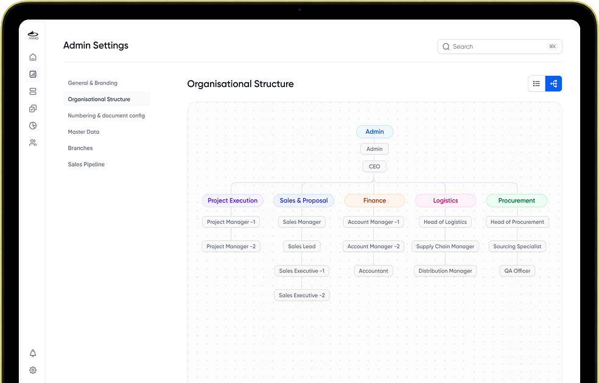
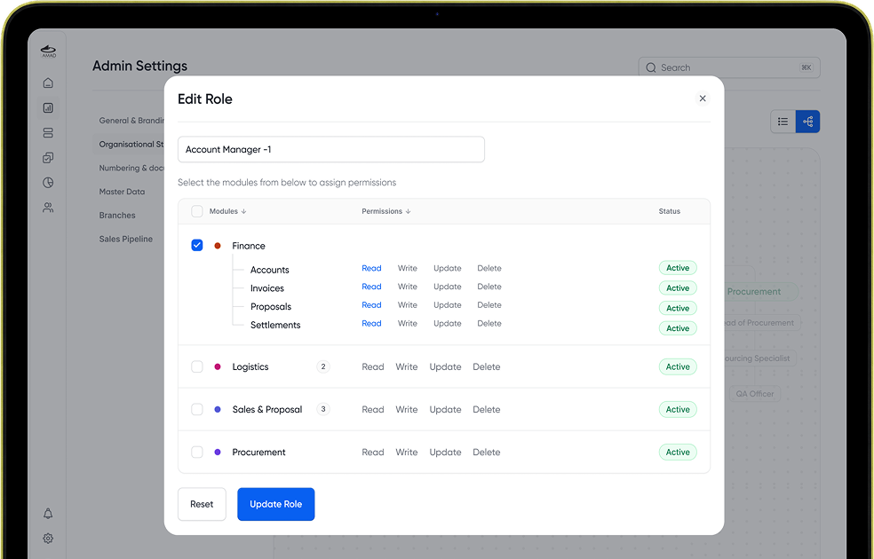
Two companies, without anyone noticing
Oman and Dubai have different VAT numbers, addresses and rules. Every module knows which branch a record belongs to from the moment it's created. Nobody has to think about which company they're working in, and every document comes out legally correct.
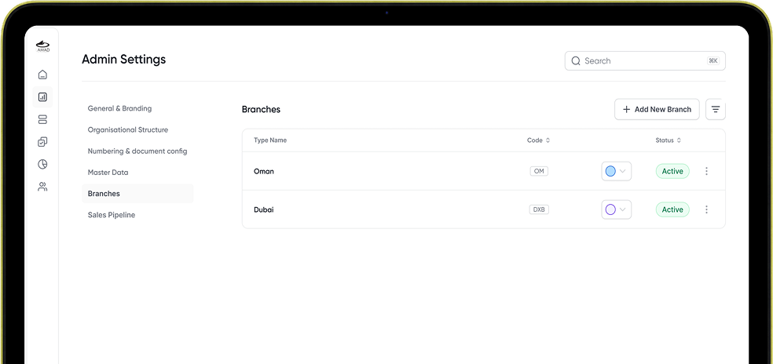
The meeting where I held the line
I presented the whole structure before designing a single screen. The client's answer was immediate: "We don't understand this. Just start designing."
I didn't. Design and development were running side by side, so screens without an agreed structure meant redoing work mid-build. I told them plainly that understanding this now would save time and money later, and asked for a second try.
The second time, I opened with what we'd cover: Sales and Proposal, through Procurement and Logistics, to Finance, with Project Management alongside. And I used the exact words from their own documents. They were following their own process, not decoding a designer's diagram.
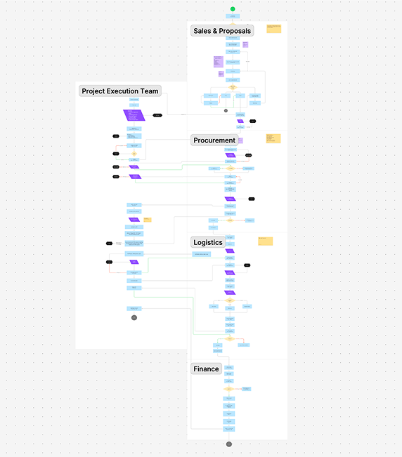
And the time I didn't check
Midway through, a stakeholder who hadn't been in that meeting said the Logistics flow was wrong. They were right, and it wasn't small. I had folded two steps into one, and everything after it had to be rebuilt.
What I'd designed
- Vendor chosen
- Goods arrive at LAMAD
- Logistics
- Client
What it needed
- Vendor chosen
- Logistics: vendor to LAMAD
- Built at LAMAD
- Logistics: LAMAD to client
I had sign-off, but from whoever was in the room, not from the person who owned it. After that, for every module, I checked who owned it before moving on.
How it was checked
There was no budget or access for usability testing, and the users were still moving over as it was built. So I walked each head of department through every flow in their own words, and handed modules to developers one at a time, so problems came up while they were cheap to fix. Next time I'd push to watch someone actually use it.
Every hat
Development ran alongside, so I ran the handoff: when developers had a question, they tagged me and I walked them through it. When I needed a decision, I tagged the right person on Teams, got on a call, and confirmed before building further. No PM, no researcher. It all came through me.
Outcome
The design is done and handed off. The system is in its last phase of development, with the final changes going in before it goes live in both countries. Because modules were handed off one at a time, most flows are already built and checked against the designs.
Once the team is using it daily, I plan to go back for numbers: how many POs are made in the system, and how much faster a visit turns into an inquiry.
What I learned
People would open this every day to do their jobs. Someone who has managed fine with notebooks and Excel for years won't put up with a system that slows them down, so it had to be faster than what they had, without burying anyone. Each screen shows what that person needs right then, with everything else one step away.
The other half was protecting the business from its own system. There couldn't be a loophole anyone could quietly use for themselves. So every big action, like a vendor override or a major change to a record, goes through an approval, and everything is logged. Easy for honest daily work, with no room for misuse: that's what I'd take into the next project.